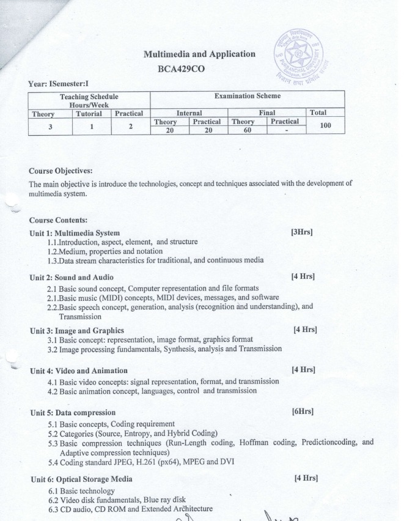
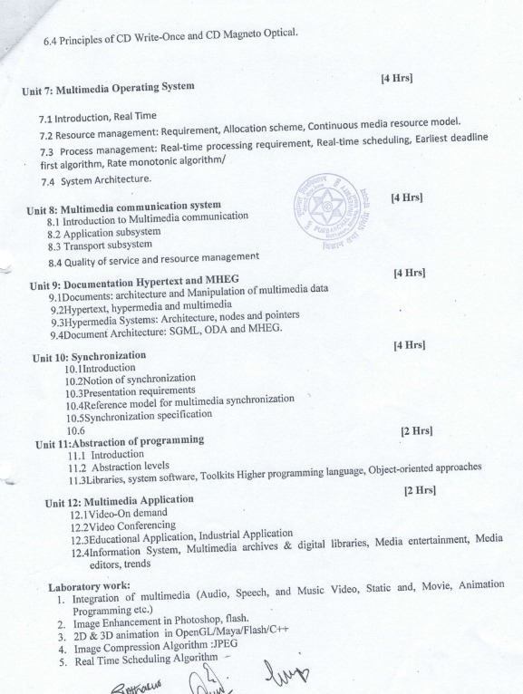

Twelve units, forty-five teaching hours and five practical labs: everything you will study, and how it is assessed.
Theory 3 · Tutorial 1 · Practical 2 hours
Year IV, Semester VII · course code BIT477MS
Sound, image, video, storage media and operating-system support.
Representation, compression, synchronization and quality of service.
Coding algorithms, scheduling, documents and programming abstractions.
Foundations (1–4) → compression and storage (5–6) → systems (7–10) → building and applying (11–12).
Teaching hours per unit, 45 in total. Data Compression is the longest (gold).
Indicative schedule; the academic calendar decides the exact dates.
What multimedia is, its structure, media types and data streams.
Sound physics, digital audio, MIDI and speech processing.
Bitmaps, formats, graphics systems, dithering and recognition.
Video signals, colour models, computer video and animation.
Huffman, run-length, JPEG, MPEG and coding categories.
CD-DA, CD-ROM, XA, DVD, Blu-ray, CD-WO and CD-MO.
Real time, resource management, EDF and rate monotonic.
Application and transport subsystems, QoS and protocols.
Hypermedia, the Dexter model, SGML, ODA and MHEG.
Skew, reference model, specification and distributed sync.
Libraries, toolkits, languages and object-oriented design.
Application classes, systems and the development cycle.
20 marks
20 marks
60 marks
There is no final practical examination; the practical marks are internal.
Guided labs, tested Python scripts and browser simulators are available on this site.


Scanned copy of the official syllabus. Course code and semester follow the current BIT477MS listing.
Deep topic notes for every unit, with worked examples.
Class decks, self-marking questions and flashcards.
Cheat sheets, mock exams with a timer and a Nepali glossary.
Start with Unit 1, keep this map beside you, and bring your questions to the next class.